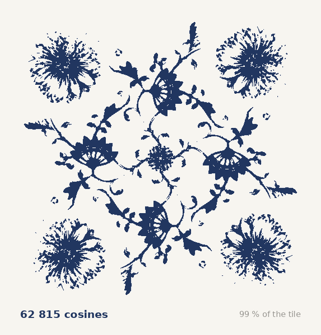

A kitchen tile, written as a sum of cosines.


The symmetry, measured first
Correlate the tile with itself under each symmetry of the square.
| rotation | mirror | ||
|---|---|---|---|
| 90° | +0.536 | vertical | +0.158 |
| 180° | +0.480 | horizontal | +0.189 |
| 270° | +0.536 | diagonal | +0.169 |
| shifted 37 px | +0.120 | antidiagonal | +0.190 |
| shuffled | −0.002 |
Mirrors sit at the level of a meaningless shift. The group is p4: four‑fold rotation, no reflections.
The equation
blue where f(x, y) > ½ The bracket is unchanged by a quarter turn, which is what p4 means.
Put the origin on the four-fold centre and C4 forces every amn real: no sine terms exist. Largest imaginary part found: 2.6 × 10−17.
The amn are measured off the photograph, not chosen.
| m, n | amn | m, n | amn |
|---|---|---|---|
| −3, 0 | +0.0654 | −3, −2 | −0.0259 |
| −4, 1 | +0.0445 | −1, −1 | +0.0226 |
| −3, −3 | +0.0380 | −3, 2 | −0.0217 |
| −2, 0 | −0.0337 | −4, −4 | +0.0202 |
Raise the cutoff

Chirality
p4 has no mirrors, so (m, n) and (n, m) are different orbits and need not carry the same coefficient. In p4m they would be equal.
Measured: χ = 0.199 — a mirror would give 0. Every tendril curls the same way, and this is how much.
What the firing does to it
Cobalt spreads into the molten glaze over ℓ = √(2∫D dt), so one generation of copying and firing is:

Curvature flow has no non-trivial fixed point. It does not preserve a pattern, it removes one.
Open
Ea for Co²⁺ in a glaze melt is unpinned: over 200–300 kJ/mol the predicted edge width moves by a factor of 40, so no single bleed length is quoted here. The pattern's identification with any named historical design is unverified.